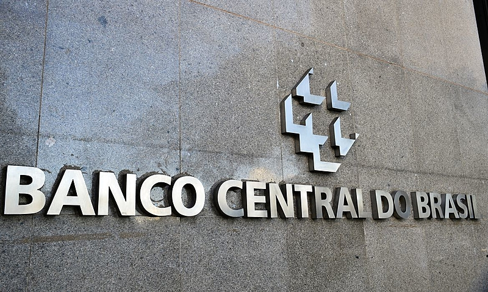

O dólar registrou queda frente ao real após a divulgação de indicadores econômicos positivos e expectativas favoráveis para a economia brasileira. O movimento chamou a atenção de investidores e analistas do mercado financeiro.
A valorização da moeda brasileira pode reduzir os custos de produtos importados e impactar diversos setores da economia. Especialistas ressaltam que o comportamento do câmbio continuará sendo influenciado por fatores nacionais e internacionais.
Data e horário: 14 de junho de 2026 | 10h30
Autor: Anna Hilda Castelani | News Today Economia
Economia
Banco Central mantém taxa de juros

O Banco Central anunciou a manutenção da taxa básica de juros após reunião do Comitê de Política Monetária (Copom). A decisão foi tomada com o objetivo de controlar a inflação e garantir a estabilidade da economia brasileira nos próximos meses.
Especialistas afirmam que a manutenção dos juros influencia diretamente o consumo, os investimentos e o acesso ao crédito. A medida também busca equilibrar o crescimento econômico diante das incertezas do cenário internacional.
Data e horário: 12 de junho de 2026 | 18h00
Autor: Lara Domingos | News Today Economia
Economia
Governo anuncia investimentos em infraestrutura
O governo anunciou novos investimentos em infraestrutura para modernizar rodovias, ferrovias e portos em diversas regiões do país. A iniciativa busca impulsionar o crescimento econômico e melhorar a logística nacional.
Os recursos serão destinados a projetos considerados estratégicos para aumentar a competitividade das empresas e facilitar o transporte de mercadorias. A expectativa é que as obras também gerem empregos e movimentem a economia brasileira.